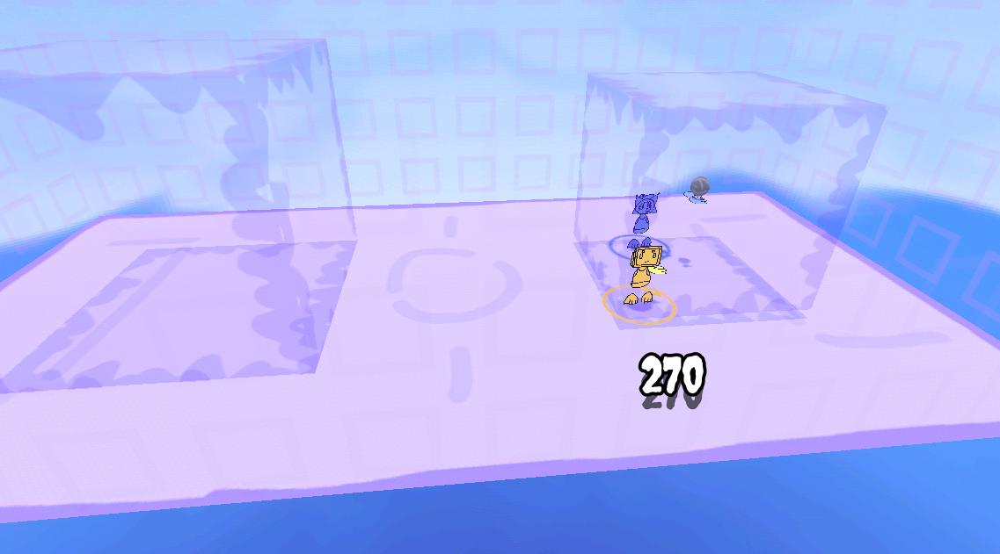
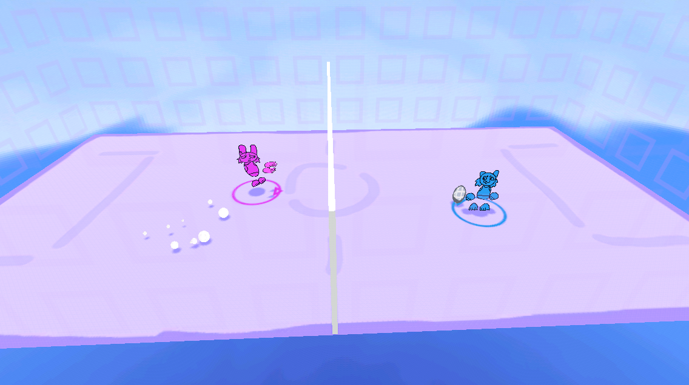
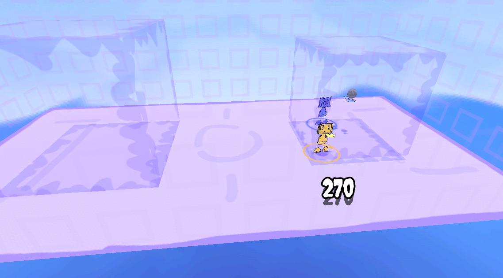
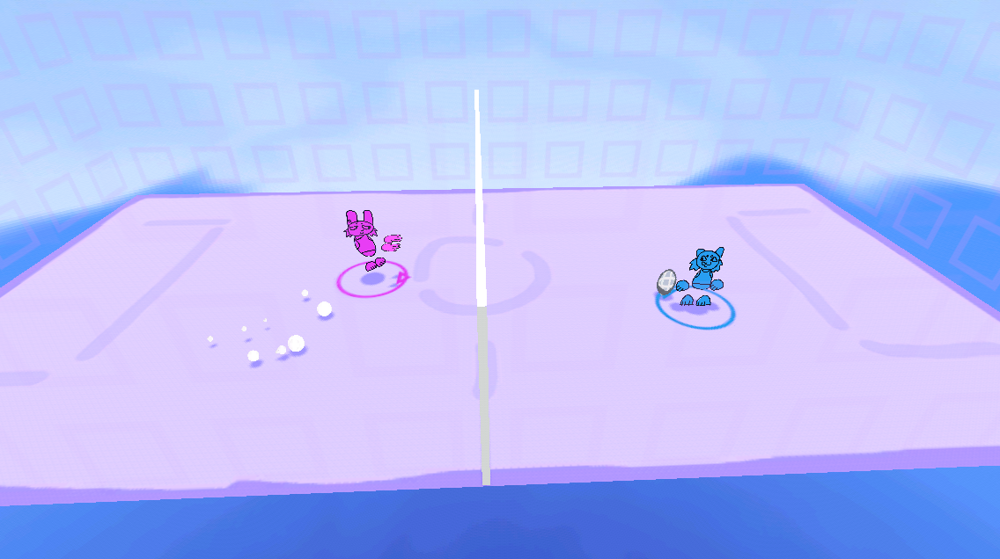

I’ve made many local multiplayer games in the past and I enjoy working on those, especially to then play with friends and family. It had been a while since I had made one, and I had a small idea I wanted to make. Quite a bit before then, I had a dream with an interesting game concept, that’s the game I wanted to make, with some modifications. I used the Godot game engine, without any templates or addons, to make this game.
The game would be a team vs. team sports like game where players control a ball by punching it. The goal is to break the other team's stone tile by hitting the ball into it hard enough enough times by punching the ball. I wanted to complete the project in a short amount of time, and kept the scope low.
Everything was going nicely and quickly. I made sure to playtest with some friends while making the game and that greatly helped with the gameplay. Early on, if someone was punching the ball which would grow its velocity while the ball is stunned, the best strategy was to push the ball and remove its velocity, which would make the ball stuck in place until one player would stop, this was an oversight. The solution was that punching the ball would make it no longer stunned, effectively letting the player steal the ball, which is fun. Because of the speed I was going at, with consideration, I even expanded scope a little later on to add music which I made in Soundtrap and I added extra polish with particles and other visuals. I realized the mechanics could even do with different game modes, so I added one where players must keep the ball at a certain place for long enough, another which played like lethal league (which was one of the inspirations for the game), and the last one that played like volleyball (this one had to be tweaked a lot because not letting the ball touch the ground at all was overly difficult).
I completed the project in March 2025 over the course of around two weeks. The project was fun to work on, I love working on little projects every once in a while. I’m glad with this project I have shown to myself I can successfully set a scope low, and be faithful to it, to then expand on it if wanted.
- Link Here 
